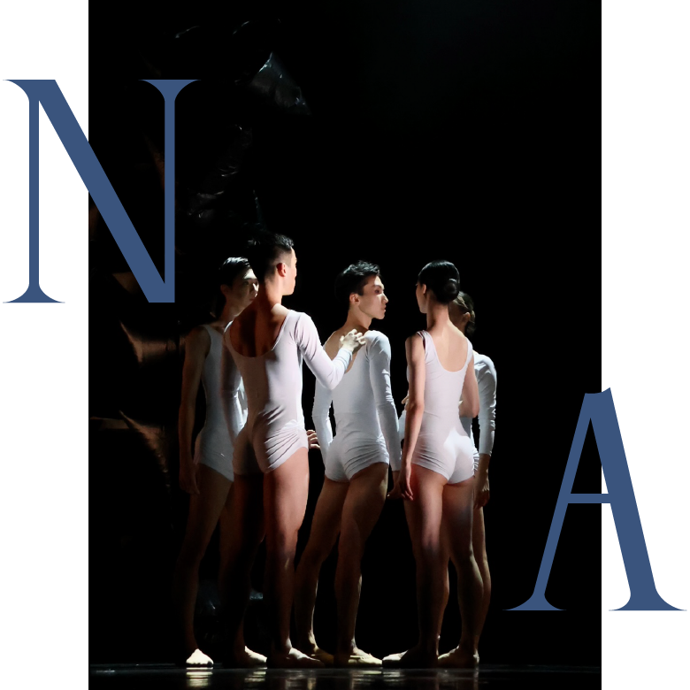
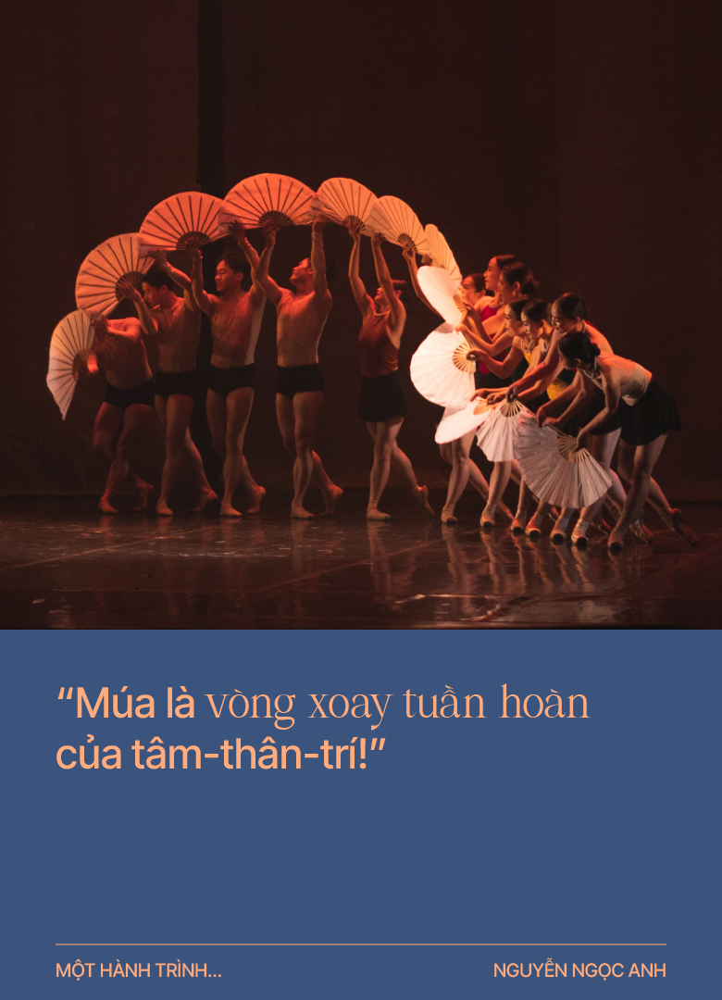
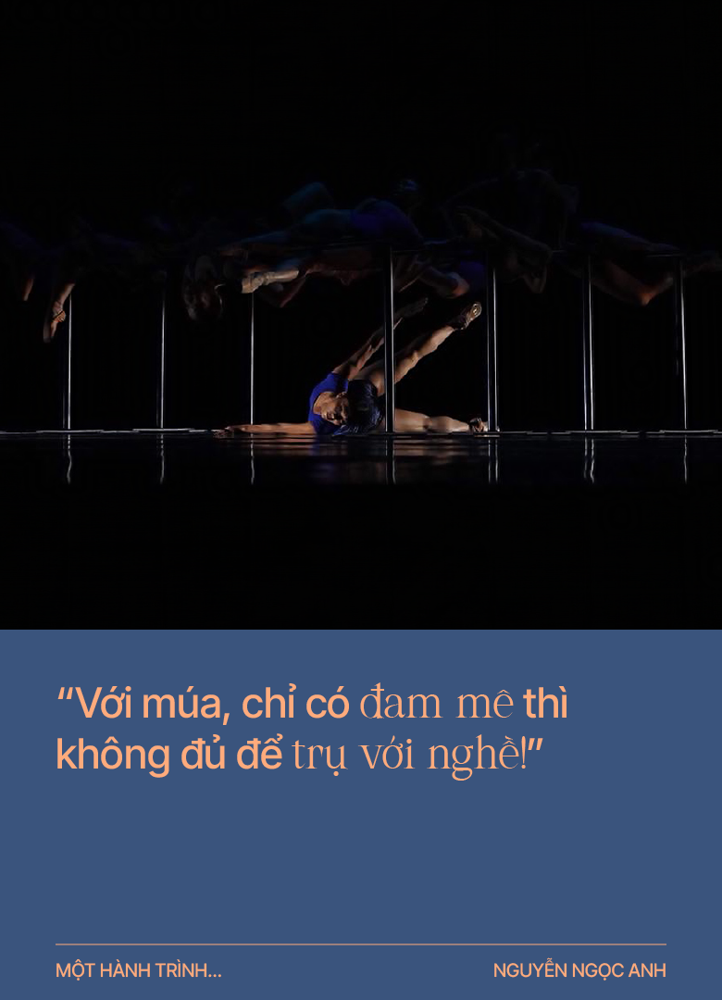

“Một hành trình…” là cuộc trò chuyện giữa Thụy Phương với các văn nghệ sỹ nhằm kể lại cho độc giả một hành trình đời, sống và sáng tác, mà họ đã đi qua. Chặng đường đó đã giúp họ định vị vững vàng trong lĩnh vực của mình (văn chương, hội họa, nghệ thuật, nghiên cứu, v.v.). Những gì họ đang làm trong hiện tại và dự định cho tương lai sẽ giúp chúng ta hiểu sự tìm tòi và làm mới bản thân, cũng như đóng góp của những nghệ sỹ và trí thức này trong lĩnh vực mà họ là chuyên gia và một cách gián tiếp đóng góp của họ cho xã hội. Qua những bức chân dung này, hi vọng giúp độc giả hiểu hơn về bản sắc cá nhân của họ (tâm tư, băn khoăn, cảm xúc) bên ngoài trang giấy, sàn diễn hay giá vẽ.

Nguyễn Ngọc Anh tốt nghiệp Trường Cao đẳng Múa Việt Nam (nay là Học viện Múa Việt Nam), được đào tạo với học bổng toàn phần tại Học viện Nghệ thuật Biểu diễn Hồng Kông (The Hong Kong Academy for Performing Arts). Nguyễn Ngọc Anh đã biểu diễn tại nhiều nhà hát múa nổi tiếng, bao gồm: Les Ballets Persans (Thụy Điển), Wayne McGregor/ Random Dance (Anh), Nhà hát Phoenix Dance (Anh), Nhà hát Nhạc Vũ kịch Việt Nam và Arabesque Dance Company (Việt Nam), v.v.. Nguyễn Ngọc Anh đã được bổ nhiệm làm biên đạo múa tại Union Dance Company (Anh) và trở thành giám đốc tổng duyệt của Henri Oguike Dance Company (Anh). Anh cũng đã nhận bằng Thạc sĩ Nghệ thuật (chuyên ngành Biên đạo) từ Đại học Middlesex ở Luân Đôn (Anh).
Với tài năng của mình, ngoài việc thường xuyên được mời làm biên đạo múa cho nhiều nhà hát, công ty ở nhiều nơi trên thế giới: Theater Regensburg (Đức), Hong Kong Ballet, City Contemporary Dance Company (Hồng Kông), Inversedance Company (Hungary), Bird College (Vương quốc Anh), v.v., Nguyễn Ngọc Anh còn hợp tác với vai trò đồng sản xuất, điển hình như vở đương đại – "There Where We Were” và vở ballet đương đại “The Ballerina” – với Arabesque Dance Company (Việt Nam). Biên đạo múa Nguyễn Ngọc Anh từng được mời làm trợ lý khiêu vũ cho phim “Harry Potter và Chiếc cốc lửa” vào năm 2005, trợ lý biên đạo cho lễ khai mạc Giải vô địch Thế giới bộ môn Thể thao dưới nước (World Aquatics Championships, hay FINA World Championships) năm 2009 tại Rome (Ý). Năm 2019, Nguyễn Ngọc Anh đảm nhận vai trò Giám đốc Nghệ thuật của Giải thưởng Múa Hồng Kông lần thứ 21 (21st Hong Kong Dance Awards).
Hiện nay, bên cạnh việc giảng dạy tại Học viện Nghệ thuật Biểu diễn Hồng Kông, Nguyễn Ngọc Anh còn quản lý Trường Múa Alpha (Alpha School of Dance) ở Hồng Kông, được thành lập từ năm 2005, chuyên dạy ballet cho trẻ em từ 3 tuổi cùng các môn nghệ thuật bổ trợ khác.
Hết tiểu học, anh nhập học vào Trường Cao đẳng Múa Việt Nam (nay là Học viện Múa Việt Nam), vì anh thích học múa hay vì gia đình khuyến khích? Trường Múa đã đem lại điều gì quan trọng nhất cho anh?
Thuở nhỏ, gia đình tôi sống ở khu tập thể văn công Cầu Giấy. Cả dãy phố là nhà của các giáo viên Trường Cao đẳng Múa, các bác hàng xóm cũng là thầy cô giáo dạy múa và con các bác cũng là bạn học của tôi. Bản thân tôi rất thích múa, thích sự bay bổng, cho nên với sự dìu dắt ban đầu của cô An [1], thầy Cường [2], tôi bước chân vào Trường Múa. Thời đấy, con trai học múa hiếm nên con trai là “của hiếm” [Cười]. Và hơn thế nữa, khi ấy tôi nhìn nhận việc đi học múa sẽ mang lại cho mình một cơ hội được ra nước ngoài học hỏi.
Ngôi trường đó đã đem lại cho tôi kỹ năng cơ bản về chuyên môn múa, một nền tảng ballet vững chắc và một cái nghề cho cuộc đời tôi. Múa giúp tôi trưởng thành về mặt con người: rèn luyện sức dẻo dai, sức chịu đựng, tính kỷ luật đối với bản thân và công việc, khiến tôi trở thành con người cầu toàn và luôn hướng đến sự hoàn mỹ. Và Trường Múa thực sự đã đem lại cho tôi cơ hội xuất ngoại.
[1] Nhà giáo nhân dân Nguyễn Kim An, giảng viên múa của Trường Cao đẳng Múa Việt Nam.
[2] NSND Lê Ngọc Cường, biên đạo múa, Nguyên Cục trưởng Cục Nghệ thuật biểu diễn (Bộ VH,TT&DL).
Chỉ cách nhau một năm, anh nhận được hai học bổng của Học viện Nghệ thuật Biểu diễn Hồng Kông và của Nhà hát – Nhạc viện Lyon (Conservatoire de Lyon – Théâtre) ở Pháp. Vì sao anh chọn Hồng Kông, vốn không phải là cái nôi của ballet và múa đương đại?
Hai học bổng này đến với tôi gần như cùng một lúc. Ban đầu, tôi không có ý định đi Hồng Kông vì vẫn muốn được đến châu u. Nhưng học bổng phía Hồng Kông đưa ra là toàn phần và được đi ngay vào tháng 9, trong khi học bổng đi Pháp phải chờ đến tháng 1 năm sau và các sinh hoạt phí chưa được thảo luận rõ ràng. Khi đó, tôi e ngại rằng nếu chờ thêm mà không có kết quả từ Pháp thì có thể sẽ lỡ mất cơ hội được đi du học. Cuối cùng, tôi quyết định chọn Hồng Kông. Tháng 12, khi sang đến Hồng Kông thì được báo tin học bổng đi Pháp đã hoàn thiện. Lúc đó, tôi cũng thấy hơi tiếc, nhưng đó là bài học đầu tiên về sự quyết định trong cuộc đời mình: Chịu trách nhiệm với quyết định của mình! Bây giờ nhìn lại quyết định của mình vào thời điểm lúc đó, tôi hoàn toàn không thấy tiếc, vì quyết định nào cũng sẽ mang lại những hệ quả và thành quả riêng của nó, quan trọng là mình phải có trách nhiệm với quyết định đã đưa ra.
Từ năm 1996 đến 2010, anh trung chuyển qua Pháp, Hồng Kông, Thụy Điển, Anh rồi Hồng Kông. Đó là ”cuốn theo chiều múa” hay đó là hành trạng thông thường của các diễn viên múa quốc tế?
Đúng là ”cuốn theo chiều múa”! Mỗi chặng trung chuyển qua mỗi quốc gia đều là ngẫu nhiên của số phận, tôi không biết trước hay tính trước mọi bước đi. Hồi đó, tôi như thể cánh chim, bay được đến đâu là bay đến đó. Không lên kế hoạch. Ví dụ, khi học xong ở Hồng Kông, tôi bắt đầu lo lắng về chuyện đi tìm việc. Và nhân một chuyến biểu diễn theo Học viện Hồng Kông ở Pháp, tôi đi theo một người bạn đến dự buổi thi tuyển của một đoàn múa Thụy Điển ngay tại Paris. Đến nơi, tôi nhảy vào thi thử mà không có sự chuẩn bị và giám đốc đoàn tuyển tôi rồi ký hợp đồng làm việc luôn. Vậy là, từ Hồng Kông sang Pháp biểu diễn, tôi thi tuyển tại Paris, trúng tuyển và chuyển sang Thụy Điển làm việc chỉ trong quyết định tíc tắc ban đầu là đi chơi theo bạn mình [Cười]. Với quan điểm cá nhân, tôi tin là muốn được phát triển, được cập nhật thì di chuyển, thay đổi môi trường sống và làm việc là chuyện bình thường, thậm chí là nên và cần phải như thế. Để theo đuổi nghề cần phải trải nghiệm thật nhiều!
Giai đoạn nào hay môi trường nào mang tính bản lề, và giai đoạn nào là bứt phá đối với anh?
“Bản lề” là giai đoạn học múa ở Việt Nam, vì nó cho tôi nền tảng về phong cách ballet Nga, về phương pháp học kiểu Á Đông, học và tiếp thu kiến thức một chiều từ thầy, làm theo đúng chỉ dạy, theo kiểu “top-down” (từ trên xuống) và phân định đúng sai, trắng đen rõ ràng.
“Cột mốc” là giai đoạn học ở Hồng Kông, vì đó là trung gian giữa u-Á, Đông-Tây, có vài giáo viên cũng được đào tạo tại Liên Xô. Bản thân họ giao thoa giữa hai nền văn hóa, hai phong cách, hai tư duy. Họ biết tạo không gian cho học sinh được tự do biểu đạt, như tìm động tác phù hợp với cơ thể, hướng học sinh đến việc tìm kiếm cá tính. Từ đây, tư duy của tôi dần dần được thích ứng.
“Bàn đạp” là khi sang đến Thụy Điển, mặc dù vẫn múa ballet, chưa mang lại cho bản thân nhiều sự hào hứng mới, nhưng tôi tiếp tục hành trình khám phá ngôn ngữ múa của chính cơ thể mình, biết ứng tác và tương tác nhiều hơn với bạn diễn, biết khai thác trí tưởng tượng nhiều hơn. Từ tư duy “một chiều” tôi đã biết khai phá vào tư duy “đa chiều”.
“Bứt phá” là lúc tôi sang Anh, là đến với múa đương đại. Giai đoạn đó, làm việc ở Luân Đôn, tôi vật lộn với cơ thể và tư duy, tôi phải dùng trí não rất nhiều để học, để sáng tác và để thích ứng với môi trường đầy cạnh tranh. Tôi căng thẳng trong 4 năm đầu tiên đó, cơ thể như được đập ra xây lại và hành trình khám phá cơ thể của chính mình bắt đầu. Sau 4 năm đó, tôi chuyển sang làm việc ở Leeds, lúc này, tôi chỉ phải làm việc đến 5 giờ chiều, có thời gian đi tập thể thao, đi chơi, giải trí, và đó chính là khoảng thời gian tôi được chiêm nghiệm, cảm nhận về bản thân và cuộc sống. “Bỗng nhiên”, cơ thể tôi thay đổi hoàn toàn, tôi cảm nhận được cơ thể mình, các động tác có hồn hơn, có cấu trúc hơn. Tôi làm chủ được cơ thể và chín chắn hơn. Từ đó, tôi đã làm mới ngôn ngữ múa từ chính cơ thể và tư duy của mình. Năm 2008, tôi được trao “Giải thưởng Nam nghệ sĩ Xuất sắc của Vương quốc Anh”, có lẽ đó là điểm cộng cho sự kiên trì tập luyện và phát triển bản thân.
Phải đặt mình vào môi trường khốc liệt để ”phanh thây xé xác” và tôi luyện. Nhưng cũng phải cho bản thân mình thời gian khi cần thiết để lắng đọng, cảm nhận và kết nối... Múa là vòng xoay tuần hoàn của tâm-thân-trí!
Điểm khác nhau căn bản giữa đào tạo diễn viên múa ở Việt Nam và ở những quốc gia Tây phương là như thế nào, thưa anh?
Tôi xin phép chia sẻ về kinh nghiệm của bản thân và thời gian tôi học ở Việt Nam thôi. Điểm khác nhau cơ bản thể hiện ở tư duy và phương pháp. Việt Nam đào tạo theo kiểu “một chiều”, thầy trên trò dưới, từ trên chỉ đạo xuống. Châu u đề cao cái tôi, cá tính, cho học sinh quyền tự do sáng tạo, tạo tiếng nói cá nhân. Ví dụ, khi tôi dạy học sinh, tôi hướng các em đến tinh thần “làm chủ bản thân”. Tôi không bắt buộc học trò phải tuân thủ, tôi dõi theo và chỉ dẫn. Khi đào tạo những biên đạo trẻ, tôi luôn hướng các em đến suy nghĩ tích cực để giải tỏa năng lượng tiêu cực đến từ xã hội hay cuộc sống cá nhân.
Nhưng “một chiều” hay “hai chiều” đều có cái hay cái dở riêng. “Một chiều” là sự đào tạo “khắc nghiệt” đối với cơ thể và tâm hồn, có thể tạo nên những vũ công có kỹ năng đỉnh cao. “Hai chiều” của phương Tây tạo ra nhiều ý kiến, nhiều cái tôi quá, có thể khiến kỹ năng không được đẩy cao lên hết mức. 
Anh quyết định chọn múa đương đại là nghiệp của mình, chắc hẳn có lý do, phải không anh?
Đúng vậy! Ở Việt Nam, tôi được đào tạo ballet, múa cổ điển cần phải tuân theo khuôn khổ. Đến khi tôi gặp được biên đạo Philippe Cohen, ông đến Việt Nam giảng dạy, và trở thành người thầy đầu tiên dạy múa đương đại cho tôi. Thầy nhìn ra cơ thể, sở trường, tài năng và tố chất của tôi ở loại hình múa này, thầy giúp tôi hiểu ra còn có một ngôn ngữ múa khác ngoài ballet để biểu đạt được chính mình.
Ở thời điểm nào anh tự nhủ với mình “Đã đến lúc mình phải biên đạo!”?
Lần biên đạo đầu tiên là biên đạo cho chính mình khi tôi chuẩn bị thi tốt nghiệp ở Trường Cao đẳng Múa Việt Nam. Vào thời điểm đó, cứ đến năm thi tốt nghiệp, mọi học sinh gần như đều tập và múa lại các tác phẩm từ những năm trước. Cứ lặp đi lặp lại từ năm này sang năm khác. Tôi thấy nhàm chán, muốn làm cái gì khác, không bị lặp lại và... tôi muốn thử sức. Tôi xin thầy cho tôi tự dựng tác phẩm của riêng mình, sau đó cùng với cô bạn thân luyện tập và biểu diễn. Bản năng và tố chất thích được sáng tác có lẽ đã bắt đầu từ lúc đó, từ 25 năm trước.
Tôi quan sát những nghệ sỹ Việt hay những nghệ sỹ gốc Việt thành danh trên thế giới, sau một quá trình sáng tạo để hòa nhập với đương đại hoặc tiệm cận với cái phổ quát, thì họ quay về nguồn cội văn hóa của mình. Hành trình đấy ở anh diễn ra như thế nào?
Những năm tôi làm việc tại châu Âu, vũ công đến từ Việt Nam chỉ đếm được trên đầu ngón tay, trong khi người Đài Loan, Hàn Quốc, Nhật Bản, Trung Quốc thì tương đối nhiều. Khi tôi giới thiệu mình là người Việt, đến từ Việt Nam, thì gần như ai cũng tỏ ra vô cùng ngạc nhiên, có lẽ họ nghĩ Việt Nam không có múa! Ở đâu và làm như thế nào, tôi cũng thấy mình là người Việt [Cười].
Khi sang Luân Đôn, tác phẩm đầu tiên tôi biên đạo cũng nói về Việt Nam, về hạt lúa, công diễn ở Studio Theatre của Royal Opera House. Tác phẩm tiếp theo tôi nói về hòn vọng phu, hình tượng cái chiếu và âm nhạc lấy từ album “Nhật thực” của Hà Trần. Vở diễn có hai chiếc chiếu do tôi mua ở Việt Nam và mang sang để diễn. Hình như tôi không về nguồn gì cả, vì tôi có mất gốc đâu. Chưa bao giờ tôi không thấy mình là người Việt mà! [Cười]
Anh có nghĩ “Múa là mẹ của nghệ thuật” [3] không?
Tôi không nghĩ vậy! Ai đó nói “Vận động nào cũng là múa” (Every moment is dancing)! Mỗi loại hình nghệ thuật có chỗ đứng và tầm quan trọng khác nhau. Không cái nào thay thế cái nào, chúng cần đến nhau. Tôi còn nhớ khi con trai chào đời, bé khóc to và ngọ nguậy cùng lúc, thì đó là bé hát và múa cùng lúc. Múa và nhạc sinh ra cùng nhau, tương tác, phối hợp (hòa quyện) với nhau.
[3] Trích và chuyển ngữ từ câu nói của Curt Sachs (1881 – 1959), một nhà âm nhạc học người Đức:
“Múa là mẹ của nghệ thuật.
Âm nhạc và thi ca tồn tại trong thời gian,
hội họa và kiến trúc trong không gian.
Chỉ có múa cùng một lúc sống cả trong không gian và thời gian.”
Thưa anh, diễn viên múa cần điều gì nhất để thăng hoa? Biên đạo múa cần điều gì nhất để sáng tạo?
Diễn viên cơ bản cần có năng khiếu và cơ thể cân đối, cộng với khổ luyện để đạt kỹ thuật và kỹ năng múa. Hai yếu tố này phải tương tác với nhau, và quan trọng như nhau. Như ta có câu "Có bột mới gột nên hồ", biên đạo cần tư duy và tố chất. Cả diễn viên và biên đạo đều cần đam mê để sống với nghiệp múa, cần có sự nhạy cảm và cảm thụ đặc biệt với hình thể, âm nhạc và cuộc sống xung quanh mình. Như tôi, nhiều lúc tôi nghĩ mình cũng “hâm hâm điên điên” một chút, đang ở ngoài đường, hay trong tàu điện ngầm, trước đám đông, hay trước một cảnh tượng đẹp cho mình nhiều cảm hứng, là tự nhiên cứ giơ chân giơ tay ra múa, chẳng ngại ai, bất cần đời. [Cười]
Từ các vở diễn “Linh hồn của Champa” đến “Đông Hồ”, anh đã thổi hồn các không gian văn hóa Việt vào múa đương đại. Đây là cách anh tìm đến “Việt tính” trong ngôn ngữ múa của mình?
Đúng vậy! “Việt tính” trong các tác phẩm của tôi là giao thoa ba ngôn ngữ múa: Ballet, Đương đại và Dân gian. Điều này tự nhiên như chính hành trình phát triển bản thân của tôi: tôi có gốc ballet, hiểu dân gian và thực hành (diễn và biên đạo) đương đại. Ba nền tảng đó nằm sẵn bên trong con người tôi, đã “hầm chín” trong máu thịt, hòa quyện trong tâm hồn và tư duy của tôi. Khi sáng tác, nó bật ra tự nhiên, tôi chưa bao giờ phải gồng mình. Cộng vào đó là những gia vị của va đập và trải nghiệm trong cuộc sống.
Múa là loại hình nghệ thuật phi ngôn. Múa có cần tạo ra triết lý không?
Triết lý hay không là do cá nhân biên đạo, có những tác phẩm không có cốt truyện hay ít kể chuyện (narration), thay vào đó là truyền tải thông điệp. Triết lý có thể làm thay đổi cuộc sống, tôi thường giải phóng năng lượng trong cuộc sống vào các sáng tác. Tôi có nhiều bước thăng trầm trong cuộc đời nên muốn đưa chúng vào tác phẩm và biến thành triết lý sống.
Theo cảm quan cá nhân, dường như anh rất coi trọng tính trừu tượng trong các tác phẩm?
Vì trừu tượng luôn mang thông điệp. Nhưng tôi không bao giờ ép buộc khán giả và diễn viên phải hiểu và làm theo thông điệp, mà chỉ coi đó là một không gian mở, nơi mọi người cảm nhận, soi chiếu mình vào đó, để tương tác với nhau. Từ đó mở ra trí tưởng tượng cho nhau, để tự nhìn ra những giá trị cho chính mình.
Có những triết lý nào của người Việt mà anh đã đưa vào các sáng tác?
Tôi muốn nói rộng ra là những triết lý Á Đông về tính đối ngẫu, như cho và nhận, động và tĩnh, cứng và mềm, hay như hình tượng cây tre Việt Nam dẻo dai, bền bỉ, kiên cường từ bao đời mà ngày nay chúng ta dùng khái niệm “resilience” để diễn tả. Tôi đã đọc cuốn “No Mud, No Lotus: The Art of Transforming Suffering” (Không có bùn thì không có sen: Nghệ thuật chuyển hóa nỗi đau), bản tiếng Anh, của Thiền sư Thích Nhất Hạnh và tâm đắc vô cùng với triết lý Phật giáo này. Mọi thành quả cao quý đều trải qua khổ luyện!
Tôi đã từng dựng tác phẩm lấy hình tượng hoa sen mang tên "Till we meet again" và được đề cử giải Best Choreographer (Tác phẩm Xuất sắc nhất) của Hong Kong Dance World 2022. Đặc biệt, ngày 16 và 17 tháng 12 sắp tới, tôi sẽ cho ra vở múa ballet đương đại mới, kết hợp với vũ đoàn Arabesque, sẽ diễn ra tại Nhà hát Thành phố Hồ Chí Minh (Saigon Opera House) với chủ đề "Sen / Zen".
Âm nhạc và múa là không thể tách rời. Anh nghiên cứu hay sử dụng âm nhạc như thế nào trong các tác phẩm của mình?
Trước nhất, âm nhạc phải kết nối với tôi, tôi phải cảm được, vì âm nhạc giúp tôi hình dung ra không gian, hình ảnh, màu sắc trong tác phẩm, tôi cần biết nó đưa cảm xúc của mình đi đến đâu. Thông thường tôi dùng nhạc có sẵn nên nó giúp tạo thành cấu trúc. Tuy nhiên, cũng có lúc nhạc đến sau khi dựng bài xong và tạo ra nhiều yếu tố bất ngờ. 
Từ nhiều năm nay, mỗi lần về Việt Nam làm việc, anh coi đó là công việc dàn dựng, sáng tác nhiều hơn hay là đào tạo diễn viên múa nhiều hơn?
Tôi dàn dựng và sáng tác nhiều hơn, một cách gián tiếp, đó cũng là một hình thức đào tạo. Tôi dạy và đào tạo trực tiếp bằng tác phẩm của mình. Tôi nhận thấy chuyên môn, kỹ năng, cảm thụ, ứng tác với bạn diễn của các vũ công được trau dồi và nâng cao lên.
Diễn viên múa và nghề múa ở Việt Nam hiện nay khác như thế nào so với thời anh còn học ở Trường Cao đẳng Múa Việt Nam?
Theo cá nhân tôi cái khó của nghề múa ngày nay đó là diễn viên múa có rất nhiều lựa chọn và chịu nhiều chi phối. Nhiều trường đào tạo, nhiều công ty và đoàn tuyển dụng hơn, cả trong và ngoài nước, phần cung cầu rất nhiều. Cuộc sống thường nhật hay mối bận tâm thường trực (gia đình, nghề tay trái, diễn thêm show ngoài, v.v.) khiến họ khó lòng tập trung cao độ, toàn tâm toàn ý trong những buổi tập diễn hay cho sự phát triển của cá nhân.
Ngoài ra, vào thời của tôi, chỉ học thầy và học qua một cái băng video, truyền tay nhau đem ra ngoài hàng thuê copy, nhiều khi băng nát bét vì do xem đi xem lại. Lúc đó, cả thế giới chỉ hiện ra trên màn hình trong băng video đó mà thôi. Còn ngày nay, một nút ấn vào internet, học sinh có thể xem từ trích đoạn cho đến trọn vẹn một vở múa của bất cứ đoàn múa nổi tiếng của các quốc gia, từ đó sự tiếp cận và lựa chọn cũng phong phú và rộng lớn hơn.
Ballet và đương đại là hai trường phái múa trụ cột từ ít nhất hai thế kỷ nay. Theo anh, trong những thập niên tới, nghệ thuật múa thế giới sẽ tiến triển như thế nào, hiện đã có sự pha trộn (fusion) về các hình thái và thể loại như thế nào?
Âm hưởng hay hơi thở của hình thái đương đại đã lan truyền ở khắp mọi nơi. Hình thái sẽ còn thay đổi, giao thoa giữa các trường phái sẽ còn nhiều hơn, ví dụ: kungfu và múa, latino và ballet, v.v.. Múa cũng mang hơi thở của con người đương đại, tức là như những công dân toàn cầu (global citizens). Các ranh giới sẽ mờ nhạt đi, sự giao thoa cốt để tìm tiếng nói mới, sự biểu đạt mới. Và cũng như đời sống xã hội, thế giới càng phẳng thì người múa càng cần tìm về bản nguyên, về dân gian – dân tộc để tìm ngôn ngữ mới trong thế giới cũ. Và đây là một dấu hiệu tích cực!
Đâu là những điều kiện cần và đủ để một gia đình Việt không thuộc môi trường nghệ thuật nói chung và nghề múa nói riêng cho con họ học và theo nghiệp múa?
Đầu tiên, những cha mẹ đó có tư duy và đầu óc cởi mở hay không? Họ có thể ủng hộ con đến ngưỡng nào, từ tinh thần đến vật chất? Tiếp đến, bản thân người con có đủ các điều kiện thể chất không, ví dụ, học ballet thì yêu cầu rất cao về cơ thể cân đối, khuôn mặt sáng và đặc biệt là đôi chân thẳng và dài. Sau đó, người con có đủ khả năng đi “đường trường”, chịu khổ được không? Vì với múa, chỉ có đam mê thì không đủ để trụ với nghề!
Anh và vợ đã lập ra Alpha School of Dance (Hồng Kông) trong bối cảnh nào? Điều gì khiến anh, chị tự hào nhất về ngôi trường này? Liệu có một Alpha School of Dance ở Việt Nam không?
Chúng tôi thành lập trường vào năm 2005 để cùng sinh sống và làm việc tại Hồng Kông (trước đó, tôi ở Anh). Ngôi trường vừa như là một tổ ấm cho cuộc sống vợ chồng vừa như là nguồn kinh tế cho gia đình. Chúng tôi cùng xây lên ngôi nhà này, dạy múa cho các học sinh, bao gồm tổ chức hoạt động ngoại khóa, và cấp chứng chỉ của Royal Academy of Dance ở Anh quốc cho học viên của trường. Chúng tôi bắt đầu từ số 0, giờ đã có hơn 100 học sinh, tổ chức biểu diễn thường niên, và đặc biệt, trường đã tạo niềm tin yêu cho các phụ huynh và chúng tôi được coi như cha mẹ thứ hai của các học trò.
Hiện nay đã có một Alpha School of Dance ở Việt Nam, vào năm 2018, tôi đã cùng với chị Đỗ Hải Yến [4] lập ra Lavelle Studio tại Thành phố Hồ Chí Minh.
[4] Diễn viên điện ảnh.
Thân chúc anh vững gót giày để tung cánh cao!
PARIS – HỒNG KÔNG, THÁNG 7 NĂM 2023
Thực hiện: THỤY PHƯƠNG
Đồ họa: DƯƠNG PHƯƠNG THANH, RBʼ PIP